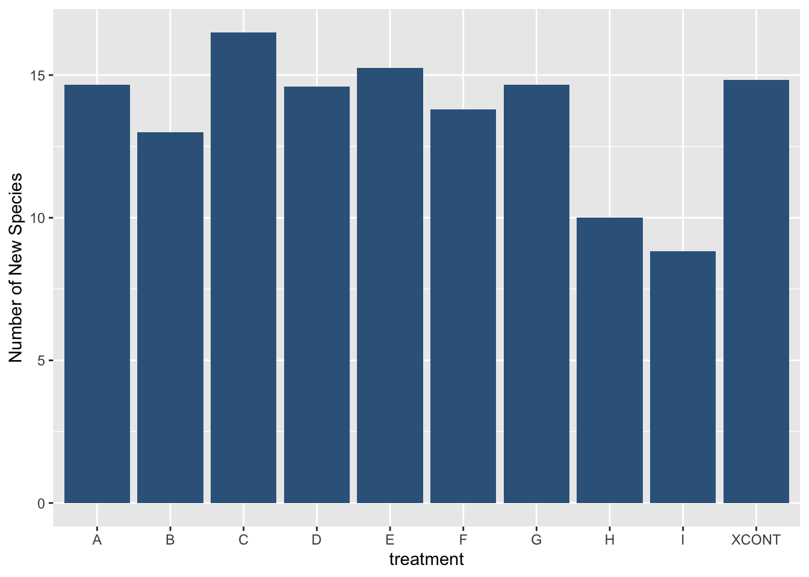
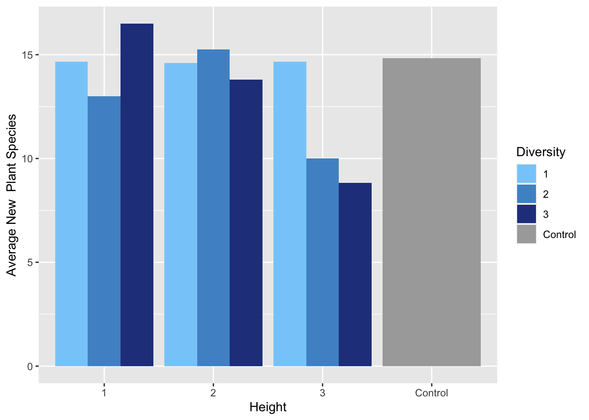
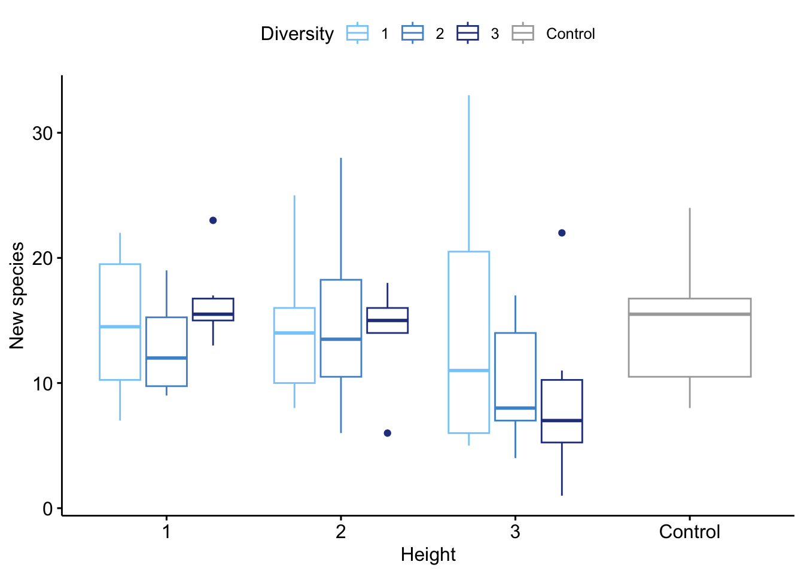
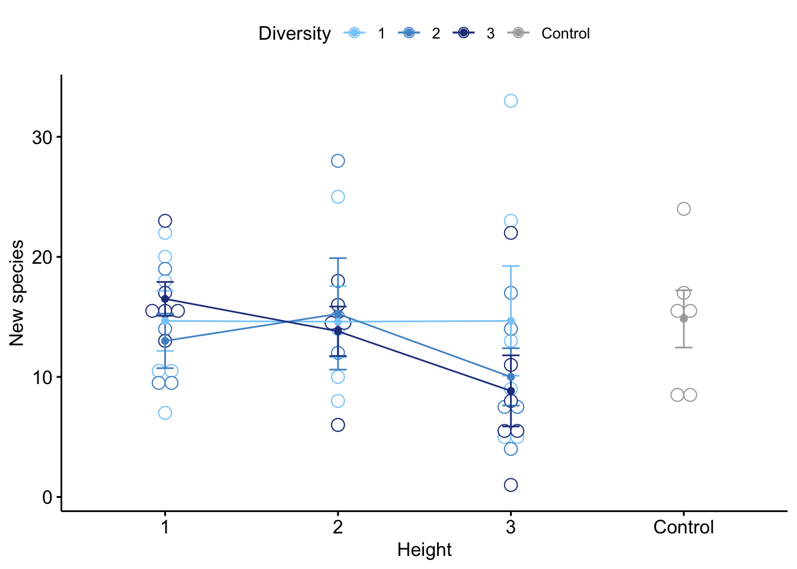
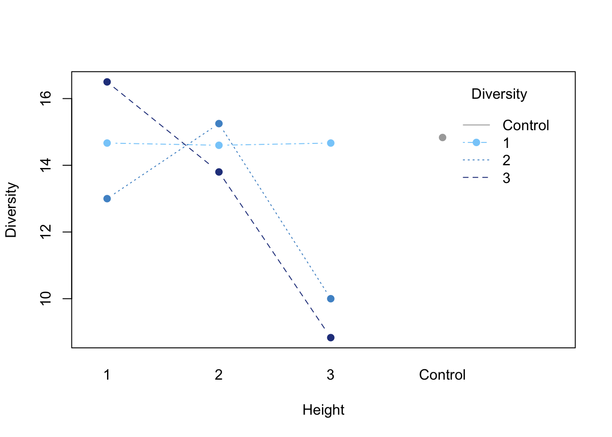

# Load libraries
library(tidyverse)
library(plotly)STAT 5014 Course Project
Objectives
This is a short project to demonstrate EDA using the common R packages dplyr and ggplot2.
The goals of this write-up are
1) to show how dplyr and ggplot2 can be used to perform EDA, and
2) to use a two-way ANOVA to assess the relationship number of new plant species and treatment type in this data set.
The Data
This data is from a study conducted in the UK between 2014 and 2016. Floristic, invertebrate, and soil microbial diversity were measured in nine different meadow treatments sown in six different locations. The meadow plot treatments consisted of all nine combinations of short, medium, and tall grass (Height 1, 2, 3), and low, medium, and high grass/forb species richness (Diversity 1, 2, 3). Grass height was manipulated by cutting the grass more or less often. Species richness was manipulated by sowing plots with seed mixes containing more or fewer grass and forb species.
Data preparation / EDA
We will be focusing on floristic diversity. We are curious whether a relationship exists between the number of new plant species found in each plot and the treatment type.
The packages we will be needing, readr, dplyr, and ggplot2, are all found in the core tidyverse. To read the csv file, we will use the readr function read_csv.
We use head() to see the first 10 rows of our data frame, and summary() to get summary statistics for each quantitative variable.
head(data,n=10)# A tibble: 10 × 8
TtmtYr year site treatment PlotID species sown perce…¹
<dbl> <dbl> <chr> <chr> <chr> <chr> <chr> <dbl>
1 0 2013 Bramingham.Rd A Bramingham.Rd.6 Agrostis … y 10
2 0 2013 Bramingham.Rd A Bramingham.Rd.6 Festuca r… y 50
3 0 2013 Bramingham.Rd A Bramingham.Rd.6 Lolium pe… y 20
4 0 2013 Bramingham.Rd A Bramingham.Rd.6 Poa prate… y 20
5 0 2013 Bramingham.Rd B Bramingham.Rd.3 Achillea … y 2.5
6 0 2013 Bramingham.Rd B Bramingham.Rd.3 Agrostis … y 7.5
7 0 2013 Bramingham.Rd B Bramingham.Rd.3 Festuca r… y 37.5
8 0 2013 Bramingham.Rd B Bramingham.Rd.3 Lolium pe… y 15
9 0 2013 Bramingham.Rd B Bramingham.Rd.3 Lotus cor… y 10
10 0 2013 Bramingham.Rd B Bramingham.Rd.3 Medicago … y 5
# … with abbreviated variable name ¹percentcoversummary(data) TtmtYr year site treatment
Min. :0.000 Min. :2013 Length:2169 Length:2169
1st Qu.:2.000 1st Qu.:2014 Class :character Class :character
Median :2.000 Median :2015 Mode :character Mode :character
Mean :2.049 Mean :2014
3rd Qu.:3.000 3rd Qu.:2015
Max. :3.000 Max. :2015
PlotID species sown percentcover
Length:2169 Length:2169 Length:2169 Min. : 0.500
Class :character Class :character Class :character 1st Qu.: 2.000
Mode :character Mode :character Mode :character Median : 2.000
Mean : 8.457
3rd Qu.: 7.500
Max. :95.500 Each row in the data frame corresponds to a certain species found in a given plot. For the sake of simplicity, we will use filter(year==2015) to consider only data collected in 2015.
Some of the species were sown in the plot at the beginning of the study, but we are interested in the relationship between number of new species and treatment type. Therefore, we will use dplyr to calculate number of new species found in each plot, and then find the average number of new species for each treatment type (treatment A-I). The “sown” column indicates whether the plant species was sown in the plot. We can use filter(sown==“n”) to choose species that were not sown.
To ensure we are not double-counting any species observed in a plot more than once, we want to remove any additional observations of species using distinct(species). group_by(treatment,PlotID) allows us to choose the distinct species for each treatment and PlotID grouping.
We use summarize(species=n()) to count the number of new species in each plot.
To find the average number of new species for each treatment type, we find the total number of new species found in all plots for each treatment type using summarise(across(species,sum)). We then use mutate() to create a new “Avg_new_species” column by dividing the total number of species by the number of plots for each treatment type. We use select() to keep only the columns that are relevant: “treatment” and “Avg_new_species”.
new_spec<- data %>%
filter(year==2015) %>% #only use obs where year=2015
filter(sown=="n") %>% # only use obs of species not sown in the plot
group_by(treatment,PlotID) %>% distinct(species) %>% #grouping by treatment and PlotID, remove redundant species observations
group_by(treatment,PlotID) %>% summarise(species=n()) %>% #count the number of species for each treatment
group_by(treatment) %>% summarise(across(species,sum)) %>% #gives total number of new species in each plot
mutate(Avg_new_species=species/c(6,4,6,5,4,5,6,5,6,6)) %>%
select(treatment, Avg_new_species)
new_spec# A tibble: 10 × 2
treatment Avg_new_species
<chr> <dbl>
1 A 14.7
2 B 13
3 C 16.5
4 D 14.6
5 E 15.2
6 F 13.8
7 G 14.7
8 H 10
9 I 8.83
10 XCONT 14.8 This gives a data frame containing the treatment type (A-I) and the average number of new species in each treatment type.
If we create a bar plot of average new species vs. treatment type, we get the following:
ggplot(new_spec, mapping=aes(x=treatment, y=Avg_new_species)) +
geom_bar(stat="identity",fill="steelblue4") +
labs(y="Number of New Species")
Unfortunately, this graph is rather uninformative, as treatment type is labeled A-I in the data set, rather than by the actual height (1-3) and diversity (1-3) levels themselves.
To fix this, we will use mutate() to add columns corresponding to the Height and Diversity levels for each plot. The following code provides a rather verbose way of labeling the treatment groups with case_when(), and there are other, more succinct ways of accomplishing the same thing.
new_spec2<- new_spec %>%
mutate(Height = case_when(treatment=="A" | treatment=="B" | treatment=="C" ~ "1",
treatment=="D" | treatment=="E" | treatment=="F" ~ "2",
treatment=="G" | treatment=="H" | treatment=="I" ~ "3",
treatment=="XCONT" ~ "Control")) %>%
mutate(Diversity = case_when(treatment=="A" | treatment=="D" | treatment=="G" ~ "1",
treatment=="B" | treatment=="E" | treatment=="H" ~ "2",
treatment=="C" | treatment=="F" | treatment=="I" ~ "3",
treatment=="XCONT" ~ "Control"))
new_spec2# A tibble: 10 × 4
treatment Avg_new_species Height Diversity
<chr> <dbl> <chr> <chr>
1 A 14.7 1 1
2 B 13 1 2
3 C 16.5 1 3
4 D 14.6 2 1
5 E 15.2 2 2
6 F 13.8 2 3
7 G 14.7 3 1
8 H 10 3 2
9 I 8.83 3 3
10 XCONT 14.8 Control Control Having added the height and diversity levels to the data frame, we will make a grouped bar graph with ggplot to visualize average new species across both diversity and height.
ggplot(new_spec2, aes(fill=Diversity, y=Avg_new_species, x=Height)) +
geom_bar(position="dodge", stat="identity") +
scale_fill_manual(values=c("lightskyblue",
"steelblue3",
"royalblue4",
"darkgrey")) +
labs(y="Average New Plant Species")
From the grouped bar graph, it doesn’t look like there is a strong trend in new species across either height or diversity levels. If anything, it looks like there may be a negative relationship between height and new species.
Another possible way of visualizing this is to create a bubble plot, where the x and y axes are height and diversity, and the size of the bubble corresponds to the average number of new species. We can make the plot interactive using plotly.
p<-ggplot(new_spec2, aes(x=Height, y=Diversity, size = Avg_new_species)) +
geom_point(alpha=0.7,color="steelblue4") +
scale_size(name="New plant species") +
scale_size_binned(range = c(1, 15), nice.breaks=TRUE, name="Average new plant species")
# turn ggplot interactive with plotly
pp <- ggplotly(p, tooltip="Avg_new_species")
ppAlthough I don’t see any any clear trends, it looks like the the highest diversity and tallest plots had the fewest new species, while the those along the diagonal had the most new species.
Analysis
Two-Way ANOVA
Lastly, let’s prepare the data for a two-way ANOVA to see if there is a difference in the mean number of new species between the treatment types.
Here is a frequency table to show the breakdown of the height and diversity levels among the treatment groups.
table<-table(new_spec2$Height, new_spec2$Diversity)
rownames(table)<-c("H1", "H2","H3","Control")
colnames(table)<-c("D1", "D2","D3","Control")
table
D1 D2 D3 Control
H1 1 1 1 0
H2 1 1 1 0
H3 1 1 1 0
Control 0 0 0 1This data frame gives us the number of new plant species in each plot for each treatment type.
data2<- data %>%
filter(year==2015) %>% #only use obs where year=2015
filter(sown=="n") %>% # only use obs of species not sown in the plot
group_by(treatment,PlotID) %>% distinct(species) %>% #grouping by treatment and PlotID, remove redundant species observations
group_by(treatment,PlotID) %>% summarise(species=n()) %>% #count the number of species for each treatment
mutate(Height = case_when(treatment=="A" | treatment=="B" | treatment=="C" ~ "1",
treatment=="D" | treatment=="E" | treatment=="F" ~ "2",
treatment=="G" | treatment=="H" | treatment=="I" ~ "3",
treatment=="XCONT" ~ "Control")) %>%
mutate(Diversity = case_when(treatment=="A" | treatment=="D" | treatment=="G" ~ "1",
treatment=="B" | treatment=="E" | treatment=="H" ~ "2",
treatment=="C" | treatment=="F" | treatment=="I" ~ "3",
treatment=="XCONT" ~ "Control")) %>%
mutate(New_species=species) %>%
select(PlotID,Height,Diversity,New_species)
head(data2,5)# A tibble: 5 × 5
# Groups: treatment [1]
treatment PlotID Height Diversity New_species
<chr> <chr> <chr> <chr> <int>
1 A Bramingham.Rd.6 1 1 11
2 A BrickRobinHill.2 1 1 10
3 A Chiltern.Ave.6 1 1 7
4 A Cranfield.Expmtl.8 1 1 22
5 A Goldington.Green.5 1 1 20Let’s visualize the data using ggpubr. First, we’ll make some box plots.
library("ggpubr")
ggboxplot(data2, x = "Height", y = "New_species", color = "Diversity",
palette = c("lightskyblue", "steelblue3","royalblue4","darkgrey"),
ylab="New species")
Here is a line plot with multiple groups.
ggline(data2, x = "Height", y = "New_species", color = "Diversity",
add = c("mean_se", "dotplot"),
palette = c("lightskyblue", "steelblue3","royalblue4","darkgrey"),
ylab="New species")
An interaction plot:
interaction.plot(x.factor = data2$Height, trace.factor = data2$Diversity,
response = data2$New_species, fun = mean,
type = "b", legend = TRUE,
xlab = "Height", ylab="Diversity",
pch=c(19), trace.label = "Diversity",
x.leg="topleft",
col = c("lightskyblue", "steelblue3","royalblue4","darkgrey"))
Finally, here is the two-way ANOVA with interaction effect:
a<-aov(New_species ~ Height*Diversity, data=data2)
summary(a) Df Sum Sq Mean Sq F value Pr(>F)
Height 3 144.1 48.04 1.032 0.388
Diversity 2 35.8 17.89 0.384 0.683
Height:Diversity 4 112.0 27.99 0.601 0.664
Residuals 43 2002.6 46.57 From the ANOVA results, it doesn’t seem that there is an association between number of new species and diversity level or height.
However, we can see how useful dplyr is in preparing data set for data analysis, and a few of the ways we can use ggplot2 to perform data visualization during EDA.
Citations
Norton, B.A.; Bending, G.D.; Clark, R.; Corstanje, R.; Dunnett, N.; Evans, K.L.; Grafius, D.R.; Gravestock, E.; Grice, S.M.; Harris, J.A.; Hilton, S.; Hoyle, H.; Lim, E.; Mercer, T.G.; Pawlett, M.; Pescott, O.L.; Richards, J.P.; Southon, G.E.; Warren, P.H. (2019). Biodiversity responses to vegetation height and diversity in perennial meadow plantings in two urban areas in the UK. NERC Environmental Information Data Centre. https://doi.org/10.5285/d0741544-cdf3-497d-996b-e30b4b7373c1